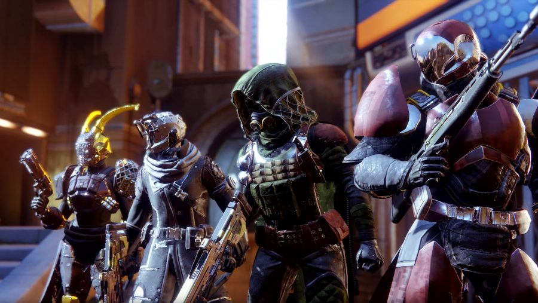
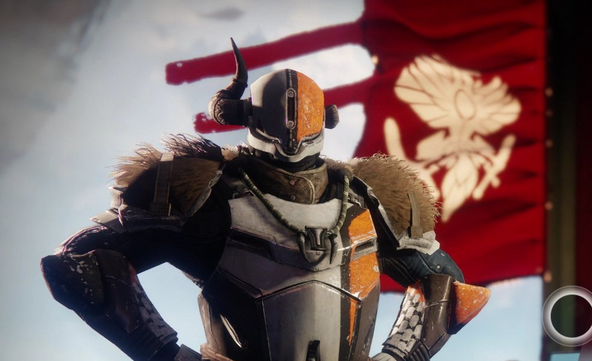
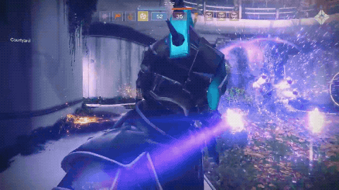
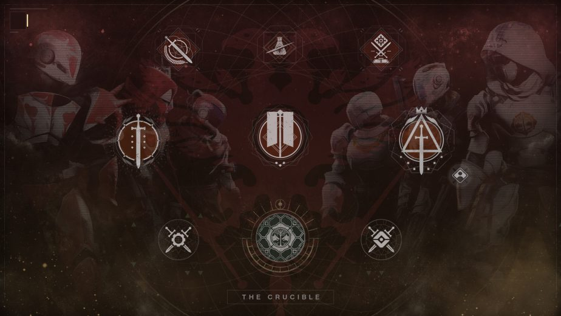
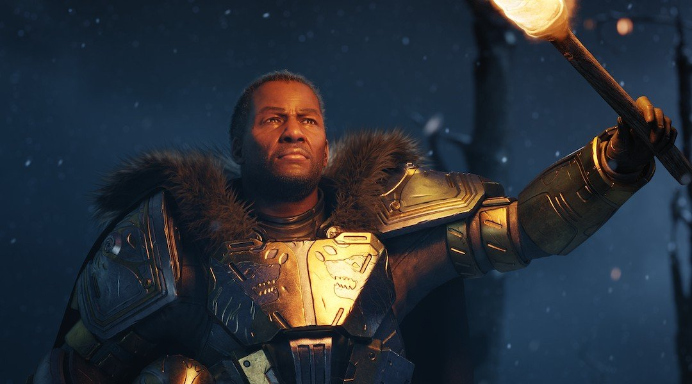
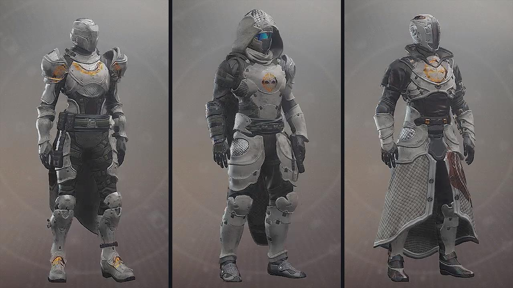
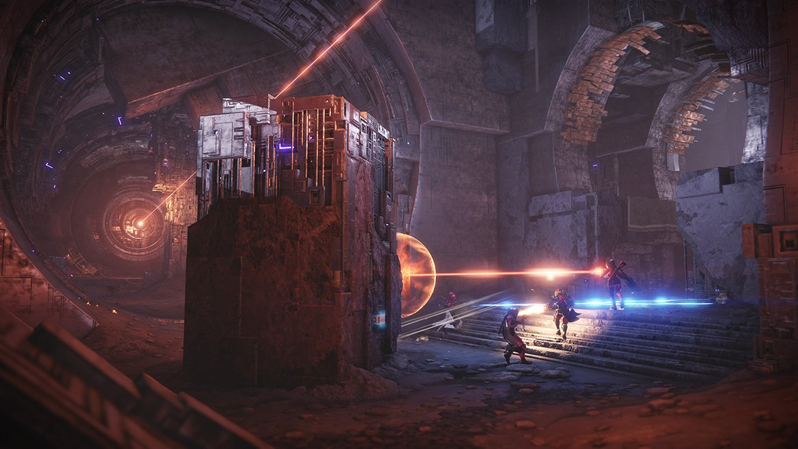
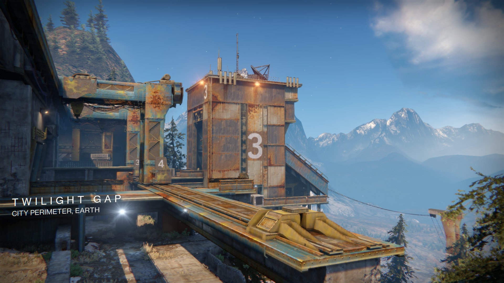

Besides playing and grinding for loot with friends on planets and the other player versus environment activities, you can test your skills with the loot you collected against other guardians (players) in the crucible.
The crucible is ran by Shaxx, a titan who watches the mayhem and cheers on those who are causing it. A mad-man who gives medals to those who show how merciless of a place the crucible can be, Lord Shaxx is certainly a unforgettable figure in destiny.
 The Crucible comes with different maps and types of matches. These matches include doubles (2v2), skirmish (3v3), Rumble (8 man free for all), and a plathera of 4v4 and 6v6 game modes control being an example of one.
One of these game modes is seasonal mode where Lord Saladin takes command over Lord Shaxx named "The Iron Banner". This mode carries on for a week and participating in this event earns exclusive gear only available through Lord Saladin. Lord Saladin is another massive figure in Destiny, he is the counterpart to Shaxx. Where Shaxx is chaotic Saladin is the calm yet somehow just as enthusiastic figure to the crucible.
 To end it off here are some of the fan favorite maps/areas the crucible has to offer.
 